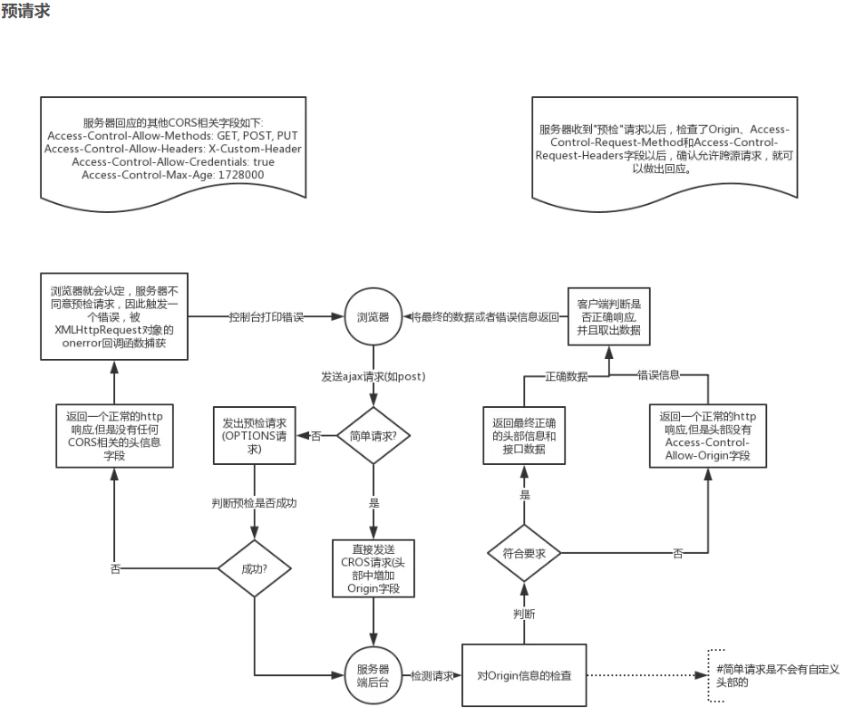

一、负载均衡
1.1配置
http{
#负载均衡服务器列表(tomcat)，自定义名称
upstream myserver{
ip_hash;
server 115.28.52.63:8081 weight=1; #weight代表权重，默认为1，越高被分配的客户端数量越多
server 115.28.52.63:8081 weight=1;
}
server {
listen 80;
server_name 192.168.17.129;
localtion / {
proxy_pass http://myserver;
proxy_connect_timeout 10;
}
}
}
1.2策略（配置在upstream内部）
1.2.1默认轮询（时间顺序逐一分配）
1.2.2当配置weight时，会指定轮询机率，主要用于处理不同服务器性能问题，weight大小与服务器性能成正比。
1.2.3.hash方式，可以解决session共享问题
upstream myserver{
ip_hash;
server 115.28.52.63:8081 weight=1; #weight代表权重，默认为1，越高被分配的客户端数量越多
server 115.28.52.63:8081 weight=1;
}
1.2.4.fair（第三方）：根据后端服务器响应时间分配
upstream myserver{
fair;
server 115.28.52.63:8081 weight=1; #weight代表权重，默认为1，越高被分配的客户端数量越多
server 115.28.52.63:8081 weight=1;
}
二、nginx动静分离
2.1实现方式
①静态资源单独部署，动态资源也单独部署，然后使用nginx进行域名转发（推荐）
②静态和动态资源混合在一起发布，通过nginx来实现分开，主要通过访问后缀名的方式实现分离，可设置expires来指定浏览器缓存过期时间。
三、root和alias的区别
root的处理结果是：root路径 ＋ location路径
alias的处理结果是：使用alias路径替换location路径
alias是一个目录别名的定义，root则是最上层目录的定义。
还有一个重要的区别是alias后面必须要用“/”结束，否则会找不到文件的，而root则可有可无。
四、nginx高可用集群
向外提供一个虚拟ip，该虚拟ip负责转发主从nginx服务器，使用keepalived脚本工具检测nginx是否宕机
五、跨域问题
5.1 预请求过程

踩坑1：如果使用nginx做tomcat后端请求转发并配置了跨域，则java中不需要开启跨域，否则会出现双端*，*问题
跨域问题1：
Access to XMLHttpRequest at 'http://183.2.168.126:19899/altizure/floor/getAll' from origin 'http://183.2.168.126:8082' has been blocked by CORS policy: Response to preflight request doesn't pass access control check: No 'Access-Control-Allow-Origin' header is present on the requested resource.
踩坑排错2：前端请求数据的方式有误，content-type：……
解决方法：
一、前端配置代理
//vue3.0的vue.config.js中配置
module.exports = {
publicPath: './',
devServer:{
proxy: {
'/altizure':{
target: 'http://183.2.168.126:19899/',
ws: false, // 如果需要，则配置websocket跨域为true
secure: false, // 如果需要，则配置https接口为true
changeOrigin: true, //是否跨域
pathRewrite: {
'^/altizure':'/altizure'
}
}
}
}
}
//api.js中前缀为:
/altizure
二、后端开启跨域controller添加注解@CrossOrigin
跨域问题2：
Response to preflight request doesn't pass access control check: No 'Access-Control-Allow-Origin' header is present on the requested resource.
六、docker
配置文件：/etc/nginx/nginx.conf
配置目录: /etc/nginx/conf.d
静态文件目录：/usr/share/nginx/html
日志目录：/var/log/nginx
docker run --name nginx-rtmp --restart always -p 18080:80 -p 1935:1935 -v /etc/nginx/nginx.conf:/etc/nginx/nginx.conf -v /etc/nginx/conf.d:/etc/nginx/conf.d -v /usr/share/nginx/html:/usr/share/nginx/html -v /var/log/nginx:/var/log/nginx -d alfg/nginx-rtmp